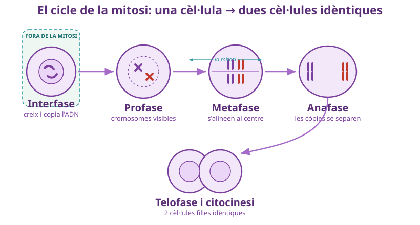
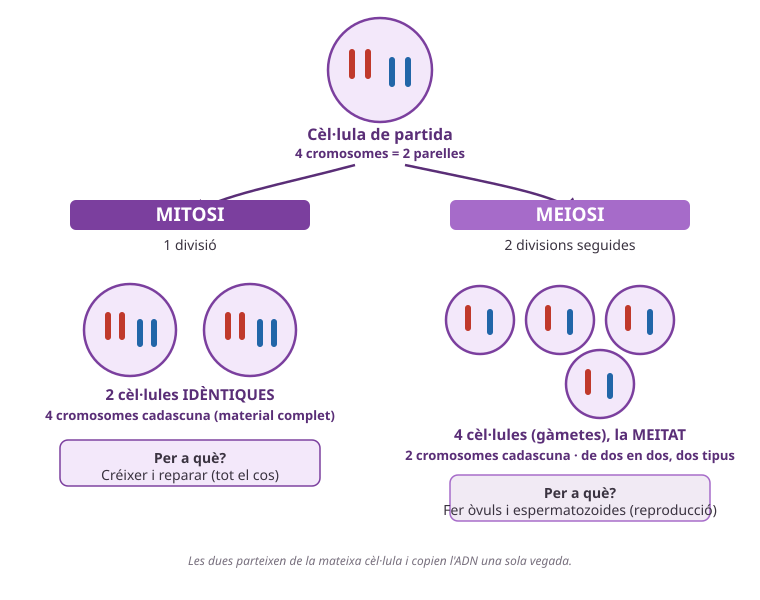
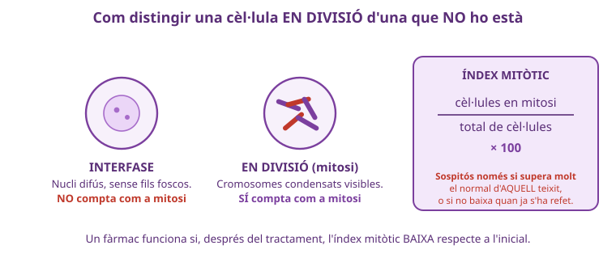

✎ Clica per editar · Ctrl+B negreta · × rosa elimina · Ctrl+Z desfés
×
🧠
SA2 · La cèl·lula · Sessió 4 de 4
Un cos que copia i un cos que reparteix
Repàs i síntesi: mitosi, meiosi i càncer
Biologia i Geologia · 4t ESO IE Temple
×
Informe final de diagnòstic — prepara la prova de La cèl·lula⏱️ 2h total
Nom:
Data:
A
×
🎯 Objectius d'aprenentatge d'avui
Distingeixo, davant d'un cas nou, si explica mitosi normal, mitosi descontrolada o un error de meiosi, i ho argumento amb el mecanisme correcte.
Relaciono els tres processos amb el mateix esquema del cicle cel·lular: on s'insereix cadascun i què falla exactament en un tumor.
Comparo els tres casos i explico per què tots tres depenen del mateix fet: copiar o repartir el material genètic amb precisió.
Anticipo un quart cas que un company hauria de saber classificar correctament entre els tres processos.
×
0
Idees prèvies: les tres frases ⏱️ 5 min
Sense mirar apunts. No es corregeix ara
✏️ 1. En una frase, què és la mitosi i per a què serveix?
✏️ 2. En una frase, què és la meiosi i per a què serveix?
✏️ 3. En una frase, què té a veure el càncer amb la mitosi?
×
1
Diagnostica els tres casos ⏱️ 35 min
En parella: quin procés explica cada informe?
Per a cada cas, decideix si explica mitosi normal, mitosi descontrolada (càncer) o un error de meiosi, i justifica-ho.
Recorda: el repartiment del material genètic es pot espatllar en més d'un moment del cicle. Abans de decidir res, pregunta't en quin procés s'havia de fer aquell repartiment concret.
×
Cas 1
La Laia s'ha fet un tall superficial al braç fent esport. Al cap d'una setmana, la pell s'ha regenerat i el tall ja no es veu.
Procés:
×
Cas 2
Un pacient de 62 anys es fa una biòpsia d'un bony al múscul de la cuixa, un teixit que en condicions normals gairebé no es divideix. El laboratori compta 80 cèl·lules en un camp de microscopi; 28 estan en divisió (fils foscos visibles).
Índex mitòtic: % Procés:
×
Cas 3
Una parella porta dos anys intentant tenir fills sense èxit. L'anàlisi de fertilitat de l'home mostra que els seus espermatozoides tenen 46 cromosomes (en comptes de 23).
Procés:
×
🔥
Repte
Per a cada cas, no diguis només «és mitosi» o «és meiosi»: explica el MECANISME (què passa exactament a la cèl·lula) i per què descartes els altres dos processos. Si et quedes dubós entre dos, digues quina dada et faria decantar-te definitivament per un.
🗣️ Demostració: prepara com defensaràs els tres diagnòstics davant d'una altra parella.
×
2
El mapa dels tres processos ⏱️ 20 min
Repàs amb les figures de S1-S3
×

Fig.1 · Repàs S1: el cicle cel·lular i la mitosi.
×

Fig.2 · Repàs S2: mitosi vs meiosi.
×

Fig.3 · Repàs S3: com es detecta la pèrdua de control.
✏️ Dibuixa (o completa) un sol esquema amb els tres processos partint del mateix cicle cel·lular.
El teu mapa
×
🔥
Repte
Al teu esquema, afegeix-hi on situaries un error de repartiment i marca amb una fletxa quin pas concret ha fallat. Després compara'l amb el d'un company: heu marcat el mateix pas?
×
3
Informe final de diagnòstic ⏱️ 25 min
La conclusió de l'equip, amb dades
✏️ Redacta la conclusió dels tres casos (un a un, amb la dada que ho demostra).
Cas 1
Cas 2
Cas 3
✏️ Ara explica en conjunt per què els tres processos (mitosi, meiosi i el seu control) són importants per al cos.
×
🔥
Repte
Escriu la conclusió dels tres casos com si fossis tu qui signa l'informe mèdic: sense repetir la pregunta, amb el vocabulari tècnic (índex mitòtic, n/2n, control del cicle) i sense arrodonir cap dada.
×
4
Inventa un quart cas + torna a les tres frases ⏱️ 15 min
Tanca la SA2
✏️ Inventa un cas breu que un company hauria de classificar correctament.
×
🔥
Repte
Inventa un cas ambigu a propòsit (que sembli una cosa però sigui una altra) i prepara la pista final que el desfaria. Se l'intercanviaràs amb un company perquè l'endevini.
🔬 Torna a l'apartat 0: reescriu les tres frases si ara les diries diferent.
×
🧠 Metacognició — 3 min
×
🎯 Torna als objectius — marca el que has après avui:
Distingeixo un cas nou entre mitosi, càncer i error de meiosi amb el mecanisme, no només la paraula.
Relaciono els tres processos amb un sol esquema del cicle cel·lular.
Explico per què els tres depenen de copiar/repartir el material genètic amb precisió.
Sé inventar un cas nou que posi a prova aquesta classificació.
×
❓
Encara em pregunto…
×
⭐
Puntuació de la sessió
★★★★★
Encercla les estrelles
×
📚 Feina per a casa — preparació de la prova
×
1
Completa una taula de tres columnes (Mitosi / Meiosi / Càncer) amb: quantes cèl·lules resulten, quin material genètic tenen, i on/quan passa al cos. Porta-la com a preparació directa per a la prova de La cèl·lula.
Adaptat per Albert Pahissa de l'original de Jordi Domènech. Llicència CC BY-NC-SA 4.0 (Reconeixement–NoComercial–CompartirIgual).